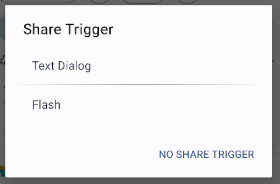
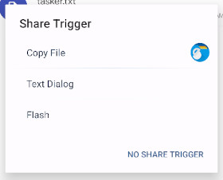
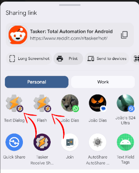

Received Share
This event will trigger when you share something to Tasker from any app with share capabilities.
Related video
Share Triggers
Share Triggers allow you to more easily "direct" how shared content is consumed by you in Tasker. For example, you could create a "Copy Text To PC" Share Trigger that, when used, would run a task that copies the shared text to your computer.
Share Triggers will be shown to you when you share something into Tasker and are automatically populated from your enabled Tasker profiles.

App Filters
App Filters allow you to specify which apps certain Share Triggers should appear in. This ensures that only relevant triggers show up in appropriate applications, enhancing task efficiency. For example, you could create a "Copy File" trigger that would only appear in a File Manager app if you wanted to.

Additional Filters
You can filter received shares by a variety of fields, allowing granular control over how each piece of shared content is processed.
Direct Share Targets
When enabled in Tasker Preferences, Share Triggers can be displayed directly in the share sheet, allowing for quick access without navigating through Tasker dialogs.

Share Data
Tasker receives comprehensive data from shared content (you can access that all in the event's created variables) and additional information can be accessed using the %rs_all_extras variable, which includes all shared data in JSON format. This can potentially reveal additional information provided by the source app.